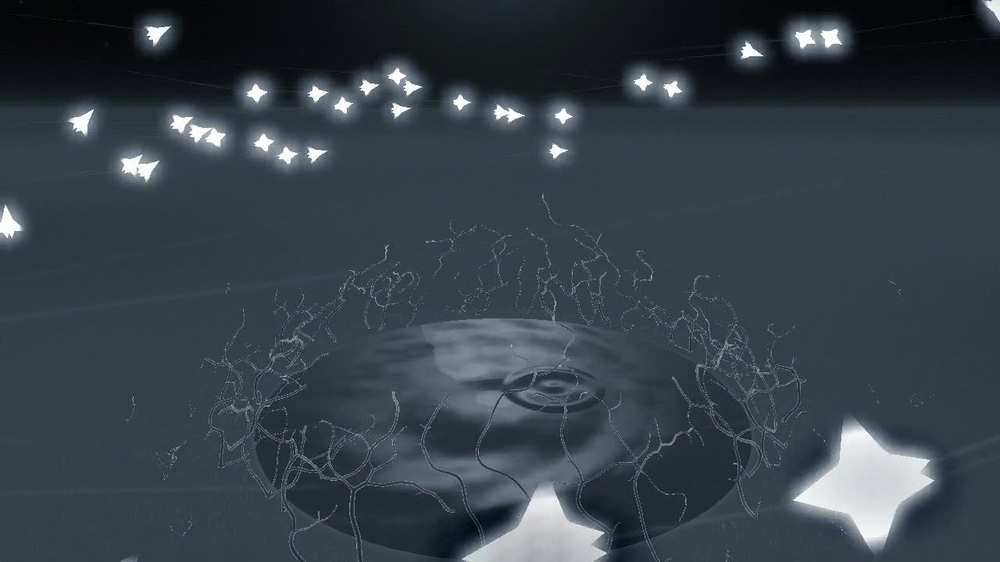
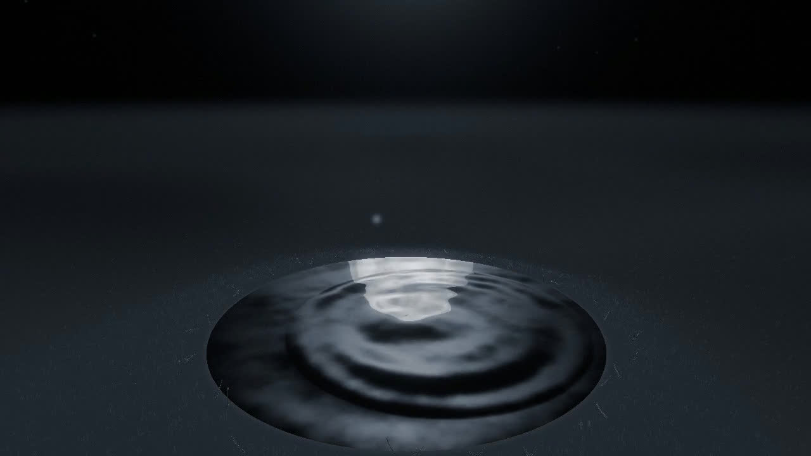
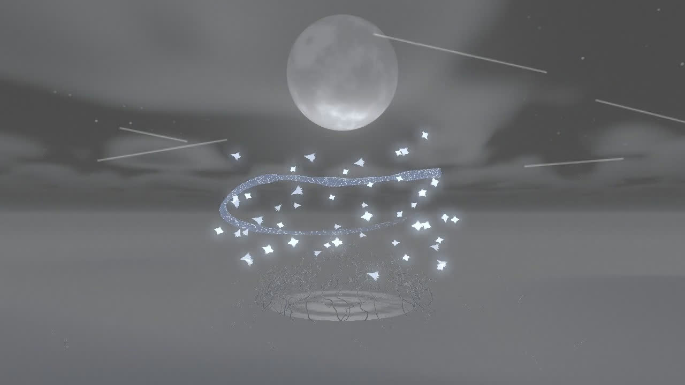
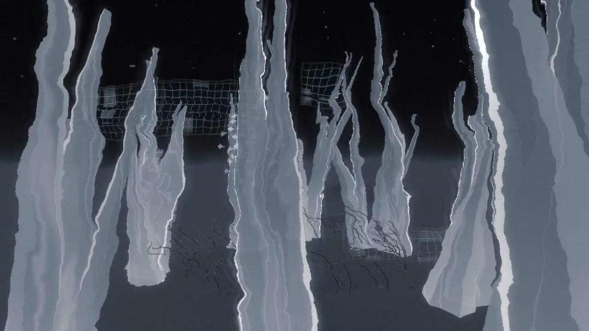

うたかたUtakata
- 年Year
- 2026
- かたちForm
- Web インタラクション／VJ／映像（制作中）Web interaction / VJ / moving image (in progress) (draft)
届かないまま、伸びて、壊れるReaching without arriving, it stretches, and breaks (draft)
水面に落ちる一滴から始まり、鳥の群れが現れる。各個体は近くの数羽を参照して動き、その規則から形が生じては変化する。It starts with a drop falling on water, and a flock of birds appears. Each bird follows a few nearby birds, and forms arise and change from that rule. (draft)
場面は水、群れ、月、結晶の順に移る。画面に残るのは、動きの軌跡。The scenes move through water, flock, moon and crystal. What remains on screen is the trace of movement. (draft)